Stochastic Voronoi and Delaunay lattices#
Periodic lattices repeat one unit cell. Stochastic lattices start from a cloud of points instead, so their cells can vary naturally across a part. They are a good fit when you want irregular load paths, a gradual change in cell size, or a structure that should not show a repeating pattern.
This guide builds beam and plate lattices inside boxes, a cylinder, a sphere, and a box with an internal cavity. It also shows how to round member junctions for a more organic appearance and how to blend a finished lattice into a separate frame. The later sections keep clipped foams in one piece, turn a random foam gradually into a regular strut lattice, join a foam to a TPMS, and fill a conformal liner volume with a graded foam. It assumes you have completed Getting Started and Functional Grading.
The workflow#
Every stochastic example has three clear steps:
create and prepare a host shape,
sample seed points inside it, and
turn those points into Voronoi or Delaunay beams or plates.
import pyvcad as pv
import pyvcad_metamaterials as mm
host = pv.RectPrism(
pv.Vec3(0.0, 0.0, 0.0),
pv.Vec3(36.0, 22.0, 18.0),
)
host.prepare(pv.Vec3(0.4, 0.4, 0.4), 1.0)
points = mm.sample_points_in_host(
host,
spacing=6.0,
seed=12,
)
root = mm.voronoi_graph_lattice(
host,
points,
beam_thickness=0.9,
)
Point sampling is separate on purpose. You can inspect the points, save them,
or reuse the same distribution with several lattice types before making any
geometry. The host must be prepared before sample_points_in_host(...) because
the sampler asks the host whether each candidate point is inside.
Choose a family and a geometry form#
Voronoi and Delaunay describe two views of the same point distribution. The choice changes the paths that beams follow and the surfaces that plates occupy.
Builder |
What it creates |
A useful starting intuition |
|---|---|---|
|
Beams along Voronoi cell edges |
Open, irregular networks that often feel softer |
|
Beams derived from a tetrahedral connection network |
More direct connections that often feel stiffer |
|
Plates on the walls between Voronoi cells |
Foam-like closed or partly closed cells |
|
Plates on Delaunay tetrahedron faces |
Dense triangular internal bracing |
These descriptions are design intuition, not a substitute for simulation or testing. Thickness, point placement, boundary conditions, and material all have a large effect on the final behavior.
Grade cell size with point density#
Cell size is controlled before the lattice is built. spacing asks for a
local minimum distance between points. density describes a target number of
points per cubic millimetre. Use exactly one of them.
The first example uses a density field that rises from left to right across a 90 mm-long rectangular prism. The squared term keeps the left side sparse, then makes the point count rise more quickly toward the right:
point_density = pv.FloatAttribute(
"0.0006 + 0.0000048 * (x + 45) * (x + 45)"
).clamp(0.0006, 0.04)
points = mm.sample_points_in_host(
host,
density=point_density,
seed=12,
max_count=195,
relaxation=1,
boundary_clearance=0.5,
)
The point preview makes the field easier to read than the finished lattice. The left side has fewer points and larger gaps. The right side has more points and smaller gaps. The Voronoi cells inherit that change.

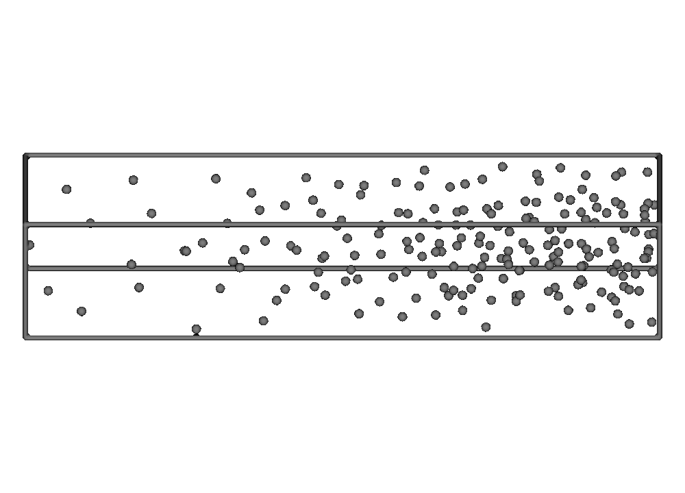

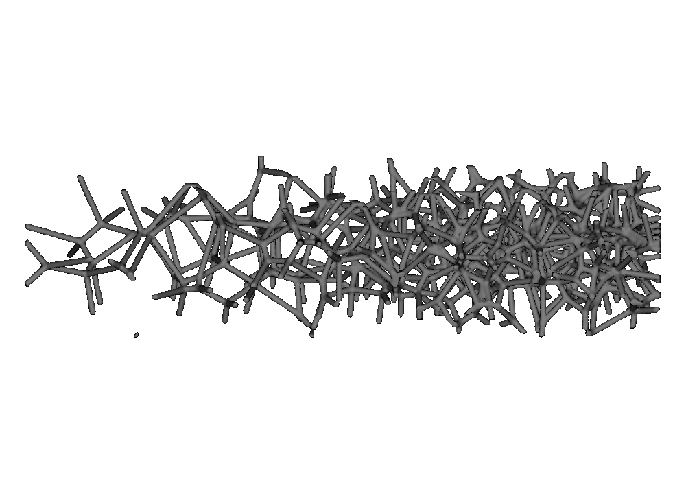
Run the full example:
01_voronoi_volume_lattice.py.
The sampling controls are useful when tuning a distribution:
seedmakes repeated runs deterministic. Keep it fixed while comparing lattice settings.max_countplaces a clear upper bound on the point count.relaxationapplies small spacing-preserving adjustments that reduce obvious clumps. One or two passes are usually enough.boundary_clearancekeeps seeds away from the host surface. It does not keep the finished beams or plates away from that surface.
A graded field can ask for a crowded region that cannot fit every requested
point. In that case the sampler returns the valid points it could place. Check
len(points) and the candidate_count and rejected_count metadata when
tuning a difficult host.
Compare Voronoi and Delaunay beams#
The next example places matching point distributions in two boxes. Voronoi is shown on the left and Delaunay mesh edges on the right.
voronoi = mm.voronoi_graph_lattice(
voronoi_host,
voronoi_points,
beam_thickness=0.8,
node_radius=0.55,
)
delaunay = mm.delaunay_graph_lattice(
delaunay_host,
delaunay_points,
beam_thickness=0.8,
node_radius=0.55,
mode="mesh_edges",
)

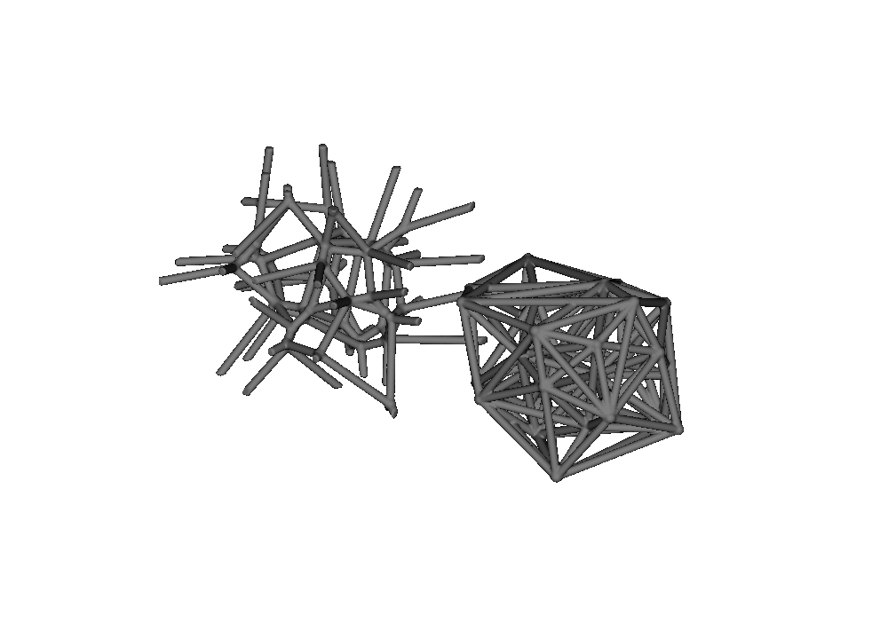
The Delaunay network contains more direct connections between the sampled
points. The Voronoi network follows the corners where cell walls meet. Reusing
a fixed seed makes this a meaningful visual comparison instead of comparing
two unrelated random structures.
Run
02_delaunay_and_voronoi_beams.py.
Three Delaunay graph modes#
delaunay_graph_lattice(...) provides three ways to turn the same
tetrahedralization into beams:
|
Beam path |
|---|---|
|
Connect neighboring seed points directly |
|
Connect each triangular face center to its three vertices |
|
Connect the centers of neighboring tetrahedra |

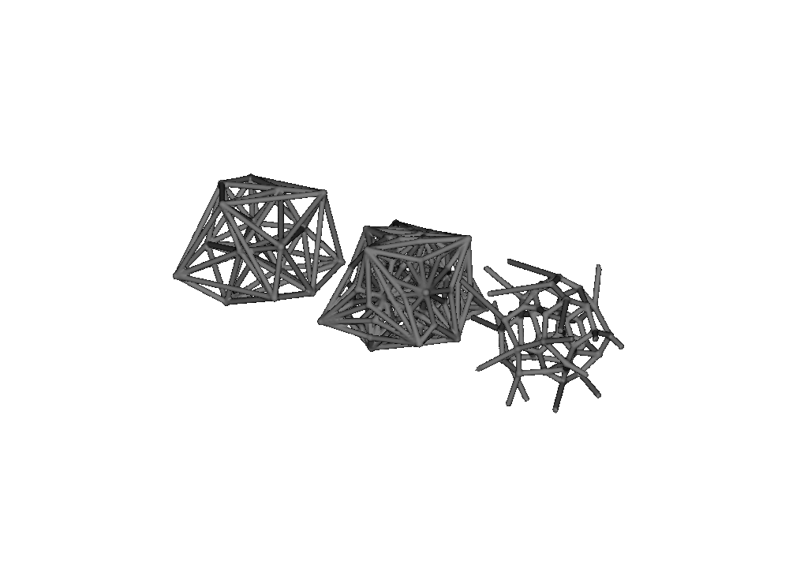
Run
07_delaunay_graph_modes.py
and keep the points fixed while switching modes.
Open and closed boundaries#
Both boundary modes keep the final implicit geometry inside the host. The difference is what the prepared lattice records at each cut:
boundary="open"clips the network and leaves its centerline topology open.boundary="closed"also records the caps or contact patches created where the structure meets the host.
The rendered solid is watertight in both cases. That is why an ordinary surface preview can look similar. Closed mode matters when you need to inspect or use the boundary closures later.
The boundary example uses a box with a spherical cavity. This makes members cross both an outside wall and an inside wall:
outer = pv.RectPrism(
pv.Vec3(14.0, 0.0, 0.0),
pv.Vec3(24.0, 20.0, 20.0),
)
cavity = pv.Sphere(pv.Vec3(14.0, 0.0, 0.0), 5.5)
host = pv.Difference(outer, cavity)
closed_lattice = mm.voronoi_graph_lattice(
host,
points,
beam_thickness=0.9,
boundary="closed",
)

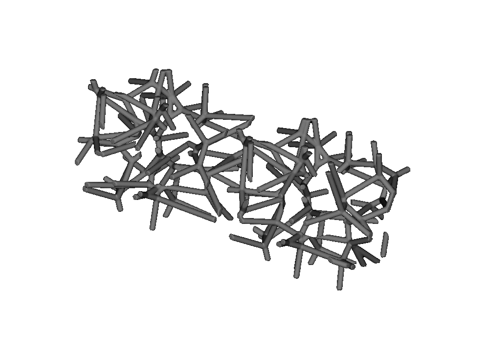

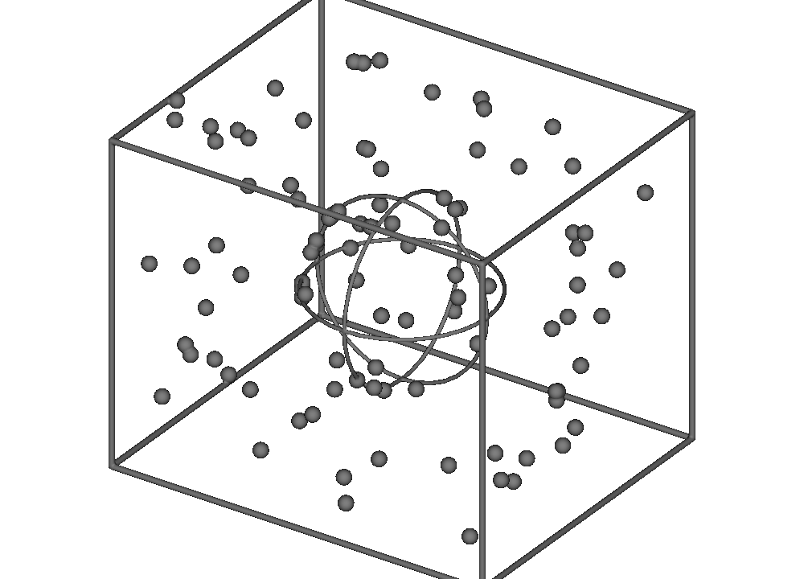
After preparation, inspect the boundary products directly:
closed_lattice.prepare(pv.Vec3(0.4, 0.4, 0.4), 1.0)
for cap in closed_lattice.boundary_caps():
print(cap.center, cap.radius, cap.edge_id)
Grade beam thickness and joint size#
Point density controls topology. beam_thickness and node_radius control the
solid geometry around that topology. They can be numbers or FloatAttribute
fields.
This Delaunay example uses a cylindrical host. Both fields grow along Z, so the bottom is fine and the top is heavy:
beam_thickness = pv.FloatAttribute(
"0.55 + 0.035 * (z + 14)"
).clamp(0.55, 1.55)
node_radius = pv.FloatAttribute(
"0.42 + 0.03 * (z + 14)"
).clamp(0.42, 1.28)
root = mm.delaunay_graph_lattice(
host,
points,
beam_thickness=beam_thickness,
node_radius=node_radius,
mode="mesh_edges",
boundary="closed",
)

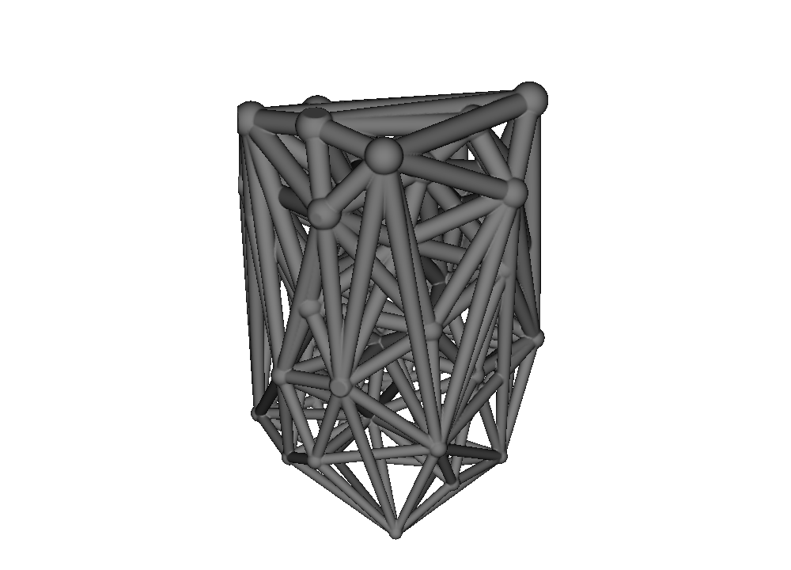
Run
04_graded_delaunay_cylinder.py.
Keep thickness fields positive everywhere they may be sampled. A bounded
expression such as .clamp(minimum, maximum) makes that intent explicit.
Round strut junctions with member blending#
Each graph member already has a round cross-section. With the default
member_blend_radius=0.0, distinct struts and optional joint spheres meet with
a sharp implicit union. A positive blend radius replaces that crease with a
smooth, locally thickened junction.
root = mm.voronoi_graph_lattice(
host,
points,
beam_thickness=1.0,
boundary="open",
member_blend_radius=0.4,
)
The radius is measured in millimetres. It acts between distinct members; it
does not blur the free span of a strut, and the host still confines the final
solid. The three renders below use the same 76 points in an 84 × 24 × 18 mm
host. Only member_blend_radius changes.

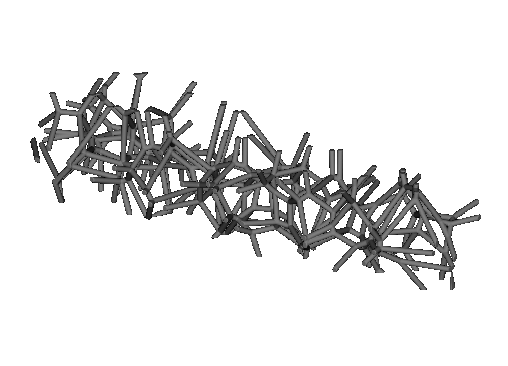
0.0 mm: sharp member union
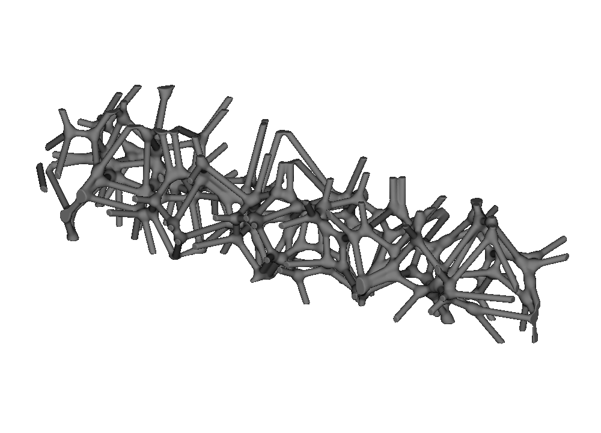
0.2 mm: restrained junction rounding
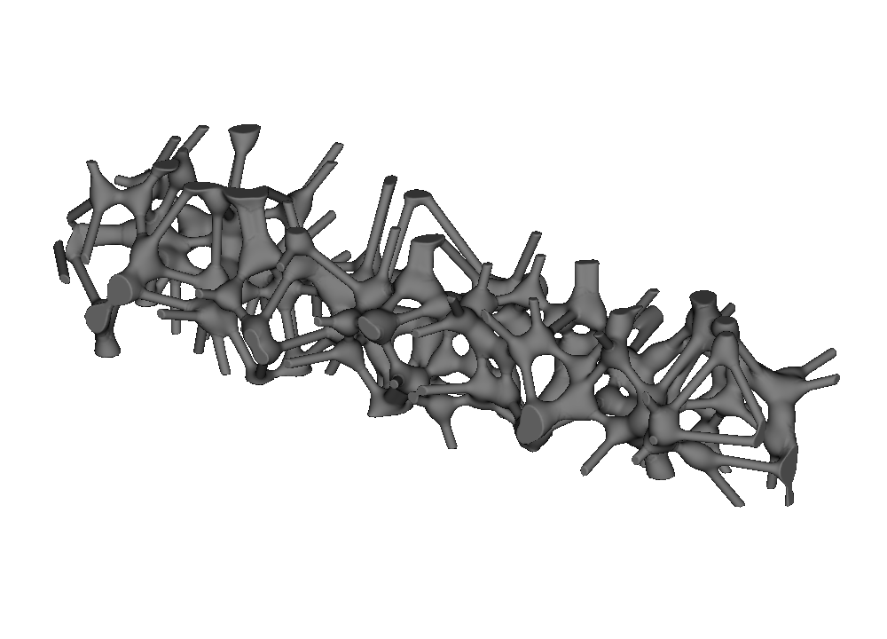
0.4 mm: pronounced organic junctionsRun
08_organic_voronoi_beams.py.
node_radius and member_blend_radius are independent. node_radius adds an
explicit sphere at each graph vertex; member blending rounds whatever distinct
struts and joint spheres already meet there. Start with a blend radius smaller
than the beam thickness, then increase it while checking minimum pore size and
material usage. A large value can bridge members that were intended to remain
separate.
Build stochastic plate lattices#
Plate lattices use the same points and hosts as beam lattices. The difference is that the result thickens faces instead of edges.
delaunay_plates = mm.delaunay_plate_lattice(
delaunay_host,
delaunay_points,
wall_thickness=0.5,
boundary="open",
)
voronoi_plates = mm.voronoi_plate_lattice(
voronoi_host,
voronoi_points,
wall_thickness=0.5,
boundary="open",
)
The cutaway below is important: without it, the outside plates hide much of the internal structure. Delaunay plates are shown on the left; Voronoi cell walls are shown on the right.

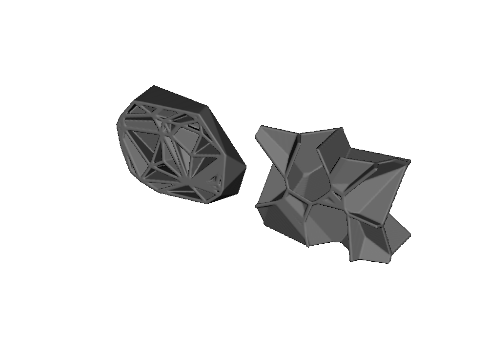
Run
05_delaunay_and_voronoi_plates.py.
Plate lattices can form enclosed pockets. Consider trapped powder, resin, or support material before using a closed-cell design for manufacturing.
Round plate intersections#
The same parameter works on face-based lattices. Here it blends distinct Voronoi cell-wall plates while keeping all triangles that approximate one plate together as a single member. This prevents the blend amount from growing when one plate needs more evaluation triangles.
root = mm.voronoi_plate_lattice(
host,
points,
wall_thickness=0.6,
boundary="open",
member_blend_radius=0.28,
)
Drag the divider to compare the same porous plate network before and after member blending. It uses 56 relaxed points with a 6.2 mm spacing target inside a 78 × 24 × 18 mm host. The matched cutaway and camera expose the internal intersections without changing the point distribution.
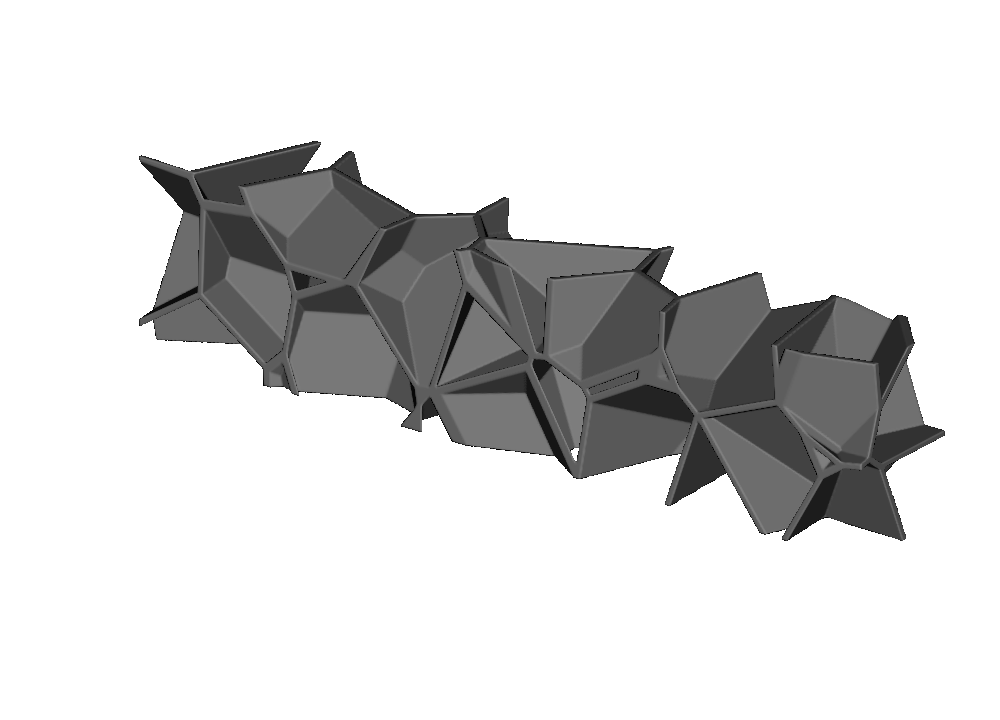
Sharp: 0.0 mm Organic: 0.28 mmVoronoi plates in a curved host#
A prepared OpenVCAD shape can be the host; it does not need to be a box. The last example places closed, gently graded Voronoi plates in a sphere:
root = mm.voronoi_plate_lattice(
host,
points,
wall_thickness=pv.FloatAttribute(
"0.42 + 0.015 * (z + 11)"
).clamp(0.42, 0.76),
boundary="closed",
)

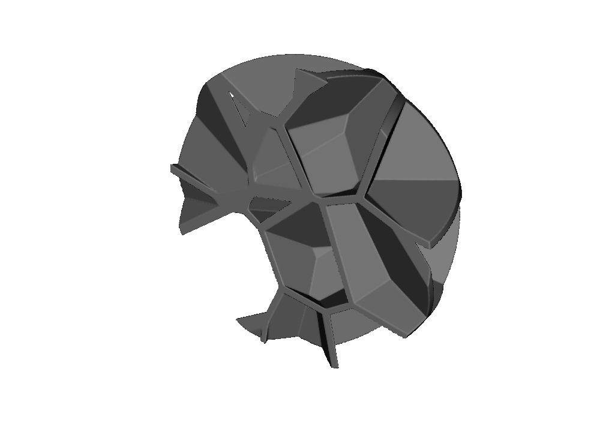
Run
06_voronoi_plates_in_sphere.py.
For closed plates, boundary_contact_patches() returns the approximate pieces
of host surface that close the plate solid. boundary_seams() returns their
edge segments. These are useful inspection products; the host remains the
authoritative boundary of the geometry.
Voronoi ribs on a surface#
So far, the seeds have filled a volume. You can also spread them over the surface of a part. Each seed then owns the patch of surface that is closer to it than to any other seed. This is called a surface, or restricted, Voronoi diagram, because each Voronoi cell is restricted to the surface. The borders between the patches become ribs: round struts that lie along the surface, or walls that stand across it.
The example below covers a torus with seeds and builds both kinds of rib from
the same seeds. pv.SurfaceMesh first turns the body into a triangle mesh. Any
triangle mesh works here, including a scan loaded from a file, even an open or
noisy one.
body = pv.Torus(18.0, 8.0)
mesh = pv.SurfaceMesh(body, 0.4) # any triangle mesh, also a loaded scan
seeds = mm.surface_seeds(mesh, pv.FloatAttribute("4.5 + x / 17"), seed=2)
ribs = mm.surface_voronoi_ribs(mesh, seeds, beam_thickness=1.0)
walls = mm.surface_voronoi_plates(body, seeds, rib_height=3.0,
wall_thickness=pv.FloatAttribute("0.6 + 0.04 * (z + 8)"))

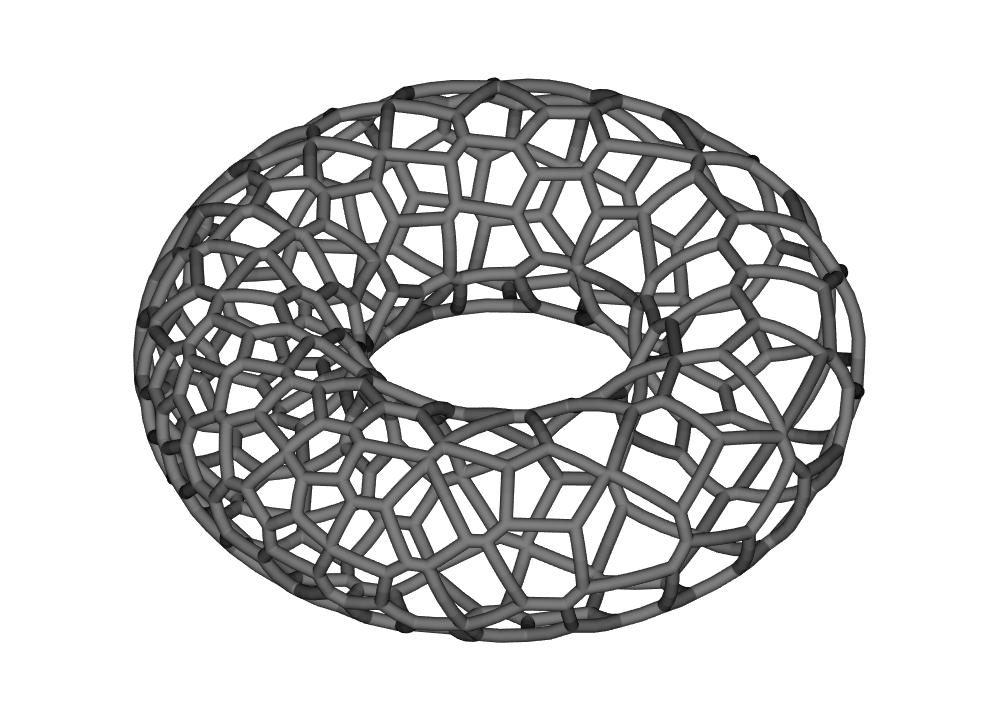

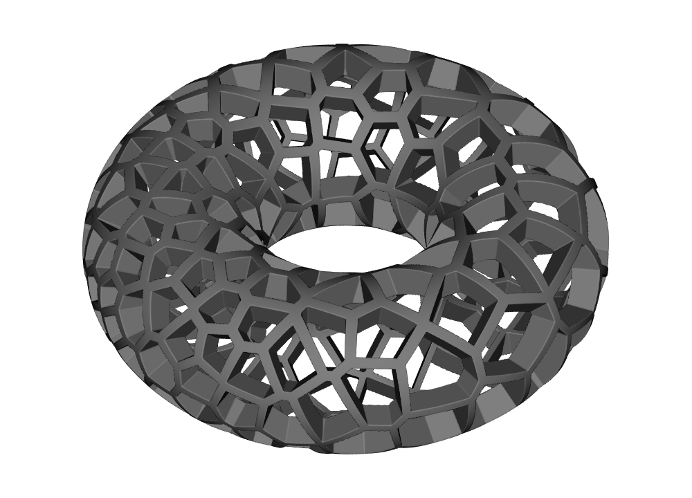
The example uses three functions:
mm.surface_seeds(mesh, spacing)spreads seeds evenly over the mesh, with neighbouring seeds roughlyspacingmillimetres apart. The spacing can be a field, so the cell size can change across the surface. Here the cells grow from left to right.mm.surface_voronoi_ribs(mesh, seeds, beam_thickness)turns the borders into round ribs centred on the surface: half of each rib stands above the surface and half sinks below it.beam_thicknessis the rib diameter in millimetres, and it can also be a field. The result is apv.BeamLattice, a node made of round struts joined at their ends.mm.surface_voronoi_plates(body, seeds, rib_height, wall_thickness)builds walls along the same borders instead. Each wall isrib_heighttall, half outside and half inside the body. This function takes the body itself rather than its mesh, and the body must be closed. Herewall_thicknessis a field that makes the walls thicker towards the top.
Seeds measure distance in straight lines, not along the surface. On a part with thin walls, keep the spacing smaller than the wall thickness. Otherwise seeds on opposite sides of a wall affect each other’s cells.
To stiffen a part’s skin, union the ribs or walls with the part. For a lighter
result, union them with a thin pv.Shell of the part instead, so they have a
skin to stand on.
Run
16_voronoi_ribs_on_a_surface.py
to see the ribs and the walls side by side in the interactive preview.
Note
Optional details. You do not need these to use the functions above.
Why not fill a thin shell with seeds and keep the Voronoi plates inside it? Seeds at different depths cut the shell at random angles and leave partial cells. Seeds placed on the surface itself avoid that.
mm.surface_seeds(...)uses Poisson-disk sampling: it drops random points on the surface and keeps each one only if it is far enough from the seeds already kept. The seeds therefore spread evenly without forming a grid.To inspect the pattern yourself, call
mm.surface_voronoi(mesh, seeds). It returns the borders as short straight pieces (segments), the two seeds on either side of each piece, and the area each seed owns. It works one triangle at a time, which is why open, non-manifold and noisy scans work.mm.surface_voronoi_ribs(...)merges those short pieces into longer struts.simplify_tolerance(default 0.05 mm) sets how far a merged strut may stray from the exact border.The walls of
mm.surface_voronoi_plates(...)are the faces of the seeds’ 3D Voronoi cells, kept inside the bandpv.Thicken(rib_height, body)around the surface. That band is why the body must be closed. For seeds on the surface, those faces cut it exactly along the same borders as the ribs.
Blend the finished lattice into a frame#
Member blending and Boolean blending solve different joins. First use
member_blend_radius to shape the lattice itself. Then use the existing
positive k on pv.Union to round the places where that completed lattice
meets a separate frame, shell, or rim:
lattice = mm.voronoi_graph_lattice(
host,
points,
beam_thickness=1.0,
member_blend_radius=0.4,
)
frame = box_frame(FRAME_SIZE, radius=1.35)
root = pv.Union(0.7, [frame, lattice])
Both renders below contain the same organically blended lattice, built from 80
relaxed points with a 6.0 mm spacing target inside the 90 × 24 × 18 mm frame.
The left side uses pv.Union(0.0, ...), so lattice-to-frame contacts remain
sharp. The right side changes only the Boolean union radius. Drag the divider
to inspect the rounded attachment regions along the outer rails.
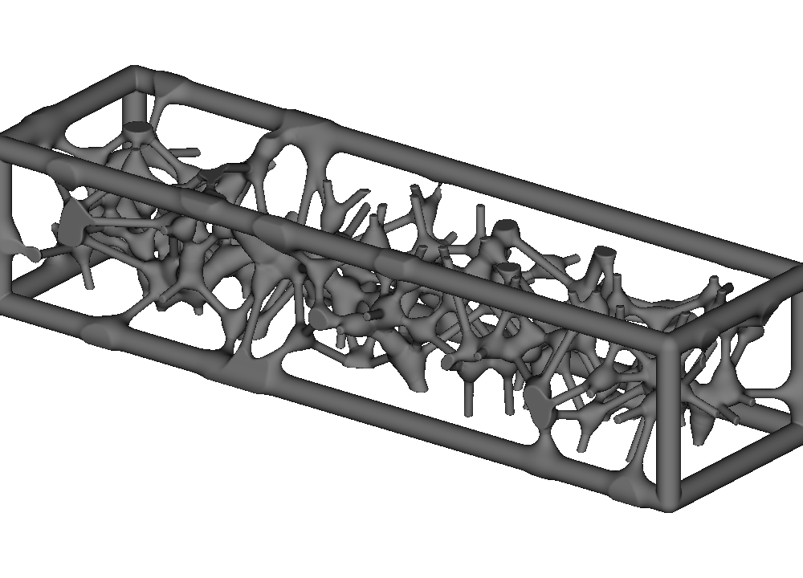
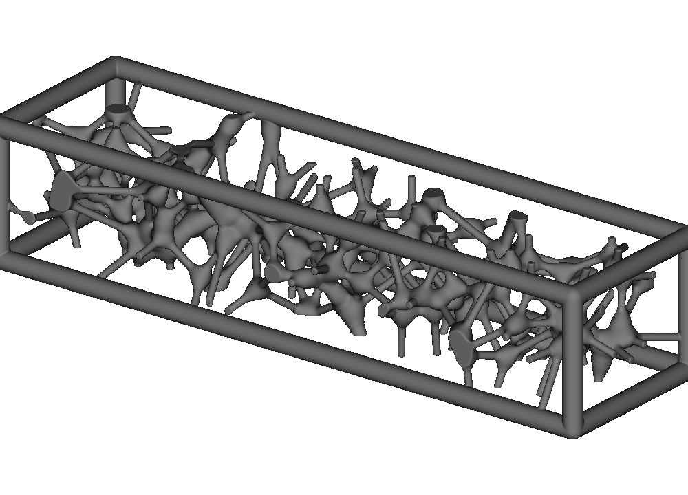
Sharp frame join Smooth frame joinRun
10_organic_lattice_frame.py.
Do not union the lattice with the fully solid host when the host represents the part envelope; that would fill the intended pores. Union it with the actual printable frame, shell, skin, or rim instead.
Keep clipped foams in one piece#
A host clips every strut that crosses its surface. Two kinds of piece can then come loose and would print as separate fragments:
a strut that runs between two cell corners outside the host but cuts across a corner or a concave part of it, so it never reaches a joint inside, and
a corner inside the host that sits so close to the surface that all of its struts leave the host straight away.
Pass prune_loose=True to drop both. The struts that stay are unchanged, and
the host still cuts them cleanly at the surface:
root = mm.voronoi_graph_lattice(
host,
points,
beam_thickness=0.9,
prune_loose=True,
)
The outermost Voronoi cells of a point cloud are open: they have no neighbours
outside the host to close them. That is fine for a random foam, but a regular
lattice (next section) loses the struts that should lie on the surface. Seeds
in a thin layer outside the host close those cells. Accept them with
allow_outside_seeds=True; the host still confines all geometry. The
transition helpers below add that layer and prune for you.
Check that a lattice is one piece#
mm.check_connectivity samples a design on a voxel grid and counts its
separate solid pieces. It runs in parallel and prints where any extra pieces
are:
report = mm.check_connectivity(root, voxel_size=0.25)
print(report)
# connectivity: 1 component at 0.25 mm voxels (connected)
# #0: 5387.797 mm^3 near (-34.62, -11.88, -11.88)
if not report.connected:
for volume, point in report.islands:
print("loose piece of", volume, "mm^3 near", point)
Use a voxel size of at most about half the beam radius. Coarser grids can
report a thin neck as a break or miss a narrow gap. Where a strut leaves the
part at a grazing angle, the grid can also catch a one- or two-voxel sliver as
its own piece; those shrink as the voxels get smaller. By default pieces of
fewer than eight voxels are listed as ignored specks. Set min_island_volume
(in cubic millimetres) to choose your own limit, or 0 to count everything.
mm.require_connected(...) takes the same arguments and raises an error with
the same listing, which is handy at the end of a script.
Large parts take longer to check because every voxel is sampled. For strut
foams, primitives and their booleans, cull_far_cells=True decides whole
blocks of empty space from one sample and gives the same answer three to six
times faster on the liner examples below. Leave it off when the design
contains a TPMS: TPMS fields can change faster than true distance, and the
shortcut could then skip a thin wall.
Sample large seed sets quickly#
sample_points_in_host is easy to read and tune, but it compares each new
point with every accepted one. For thousands of points, use
mm.random_seeds. It follows the same spacing rule and accepts the same
spacing values and fields, but grows the point set front by front natively:
points = mm.random_seeds(
host,
spacing=pv.FloatAttribute("2.0 + 0.02 * (z + 92)"),
seed=1,
)
About 87,000 points fill a 100 mm cube at 1.9 mm spacing in roughly one
second. The result is a StochasticPointSet, so it works with every lattice
builder in this guide. Its points are deterministic for a given seed but
differ from sample_points_in_host.
From a random foam to a regular lattice#
A Voronoi diagram of evenly repeated points is a familiar strut lattice:
|
Points |
Voronoi cells |
Matching graph cell |
|---|---|---|---|
|
cube centres |
cubes |
|
|
cube corners and centres |
Kelvin cells (truncated octahedra) |
|
|
cube corners and face centres |
rhombic dodecahedra |
|
So a foam turns into a regular lattice when its seeds move from random
positions onto such points. OpenVCAD does exactly that. A regularity field
chooses where the foam is random (0) and where it is regular (1).
Why this is hard, and how OpenVCAD does it#
A random foam and a periodic lattice are two unrelated networks. Their joints do not line up, so a sharp cut between them leaves struts ending in mid-air. Blending their distance fields, as a general-purpose mix block does, creates a shape that is neither: where neither structure dominates, the blend thins out and breaks into islands. Many lattice tools therefore offer no Voronoi-to-strut transition at all.
OpenVCAD changes the seeds, not the geometry. In the transition band each
random seed is paired with the nearest regular point and slides towards it by
the local regularity. Random and regular regions are then one Voronoi
diagram. Every joint is shared, the cell size stays continuous, and the
transition cannot pinch apart. The regular points can also follow a
CellMap, so the regular region bends with a curved part.
Random to Kelvin across a block#
11_random_to_kelvin_block.py
makes the left end of a block a random foam and the right end a Kelvin
lattice:
host = pv.RectPrism.FromMinAndMax(pv.Vec3(-36.0, -12.0, -12.0), pv.Vec3(36.0, 12.0, 12.0))
host.prepare(pv.Vec3(0.4, 0.4, 0.4), 1.0)
regularity = mm.ramp(-12.0, 12.0, axis="x")
root = mm.voronoi_transition(
host,
regularity,
kind="bcc",
cell_size=6.0,
origin=(-36.0, -12.0, -12.0),
beam_thickness=0.9,
seed=4,
)
print(mm.check_connectivity(root, voxel_size=0.25))
cell_size is the edge of the cube that holds two BCC points, so the Kelvin
cells are 6 mm across their square faces. origin lines the cells up with the
block faces. The random seeds are sampled automatically at a density that
matches the regular points, so cells keep the same average size through the
transition.

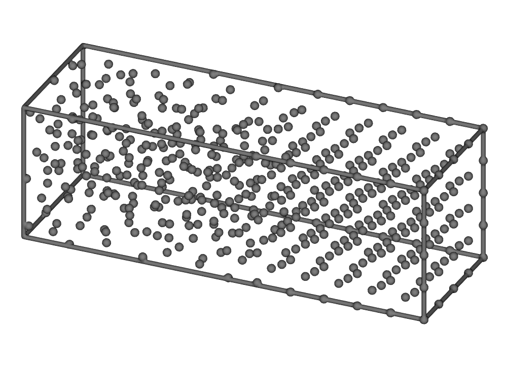

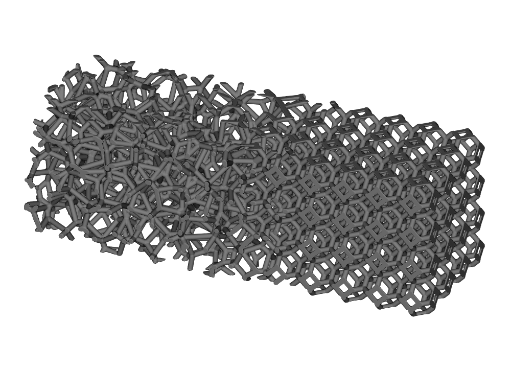
The seeds are available before any geometry is built, which is useful for inspection or for reuse:
seeds = mm.transition_seeds(host, regularity, kind="bcc", cell_size=6.0, seed=4)
print(len(seeds), seeds.matched_count)
root = mm.voronoi_transition(host, regularity, seeds=seeds, beam_thickness=0.9)
transition_seeds also accepts your own random points through
random_points=, for example a graded random_seeds result whose density
rises towards one side. Pass method="jitter" for the classic alternative:
every regular point is displaced by up to jitter times its spacing, scaled
by 1 - regularity. That gives a “perturbed lattice” whose irregularity you
control directly.
Follow a curved part#
With cell_map= instead of cell_size=, the regular points are placed
through the map, so the regular region follows the part. In
12_random_to_kelvin_shell.py
a conformal map over a domed patch places Kelvin cells along a 12 mm shell.
The foam is random near the rim and regular at the crown:
cell_map = mm.cell_map_from_surface(surface, cells=(20, 20, 2), height=12.0)
regularity = mm.ramp(rim_height + 15.0, rim_height + 30.0, axis="z")
root = mm.voronoi_transition(
host,
regularity,
kind="bcc",
cell_map=cell_map,
beam_thickness=0.9,
seed=7,
)

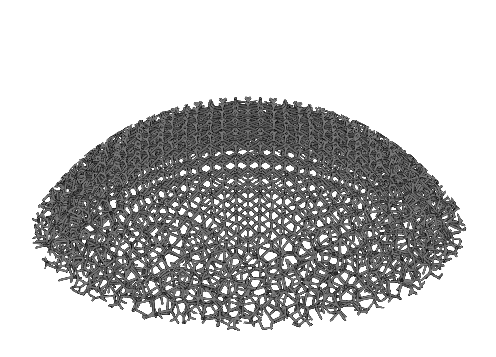
Keep the map’s cells close to cubes. Voronoi cells keep their shape under moving, turning and uniform scaling, but not under stretching, so strongly stretched map cells produce cells that differ from the Kelvin shape.
Join a foam to a mapped strut lattice#
Sometimes the regular part must be a mapped graph lattice, for example an
octet truss, or a lattice that already exists in a design. Join the two with
mm.overlap, which keeps both structures in a band around a region surface
so their struts cross:
foam_side = pv.RectPrism.FromMinAndMax(pv.Vec3(-40, -40, -40), pv.Vec3(40, 40, 0))
foam_host = pv.Intersection(host, pv.Offset(OVERLAP + 1.0, foam_side))
foam_host.prepare(pv.Vec3(0.4, 0.4, 0.4), 1.0)
foam = mm.voronoi_transition(
foam_host, mm.ramp(-18.0, -6.0, axis="z"), kind="bcc", cell_map=cell_map,
beam_thickness=0.9, seed=2,
)
kelvin = mm.graph_lattice(cell_map, mm.voronoi_unit_cell("bcc"), beam_radius=0.45)
root = pv.Intersection(mm.overlap(foam, kelvin, foam_side, OVERLAP), host)
Because the foam’s regular points come from the same map, its cells approach
the mapped Kelvin cells near the join. On a rectangular map they match
exactly, joint for joint, so even a sharp cut would connect them. On a curved
map they only match approximately: on the dome above, the joints differ by
about a millimetre, more than a strut radius. The overlap band makes the join
reliable either way, which is why it is the recommended way to attach a foam
to a mapped lattice.
13_voronoi_joined_to_mapped_kelvin.py
does this on a tube.

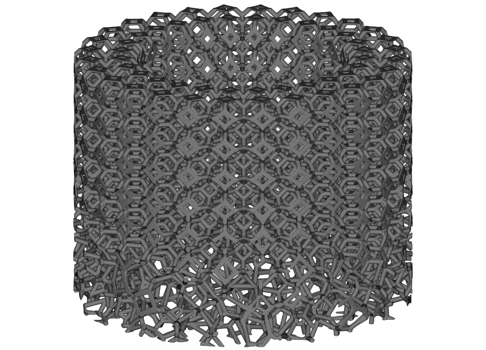
From a Voronoi foam to a TPMS#
A TPMS sheet and a strut foam have nothing to blend: one is a set of curved
walls, the other a set of beams. mm.voronoi_tpms_transition keeps both in a
band and lets the struts run into the walls:
cell_map = mm.rectangular_cell_map(
(pv.Vec3(-30.0, -12.0, -12.0), pv.Vec3(30.0, 12.0, 12.0)), cell_size=6.0
)
across_band = mm.ramp(-2.0, 2.0, axis="x")
gyroid = mm.gyroid(cell_map, wall_thickness=across_band.map_range(0.0, 1.0, 0.56, 0.8))
foam_side = pv.RectPrism.FromMinAndMax(pv.Vec3(-50.0, -20.0, -20.0), pv.Vec3(0.0, 20.0, 20.0))
root = mm.voronoi_tpms_transition(
host,
foam_side,
gyroid,
2.0,
cell_map=cell_map,
beam_thickness=across_band.map_range(0.0, 1.0, 0.9, 0.63),
seed=3,
)
print(mm.check_connectivity(root, voxel_size=0.2))
The foam fills foam_side, the gyroid the rest, and both continue through a
4 mm band (twice the half-width of 2.0). Passing the gyroid’s map makes the
foam cells the same average size as the gyroid cells. The two ramps thin each
structure as it crosses the band, so the overlap does not double the material.
regularity= (default 0, random) can also make the foam regular before it
meets the walls. See
14_voronoi_to_gyroid.py.
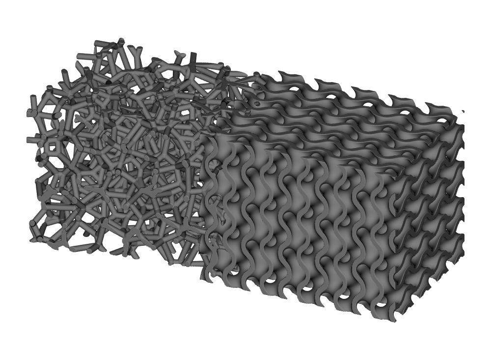
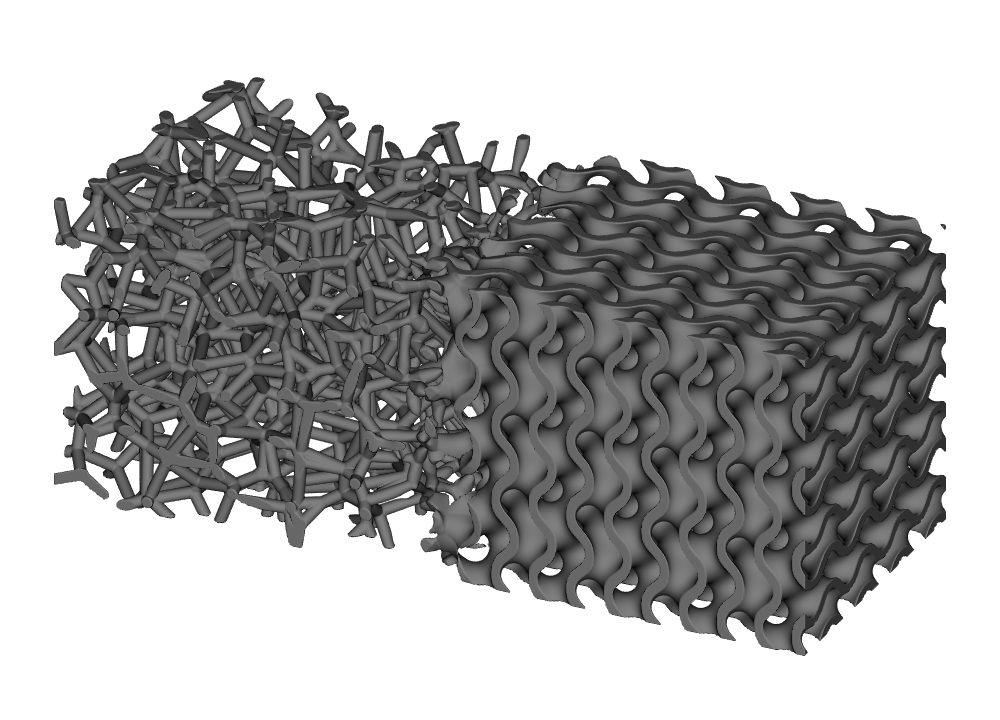
Field blend: 6 pieces Overlap: 1 pieceFailure modes and how the check catches them#
Two things go wrong at foam-to-TPMS joins, and check_connectivity reports
both:
Pinch-off. Blending the two distance fields (
pv.Mix) leaves a zone where neither structure dominates. The blend thins there and breaks into islands. In the 6 mm-cell block above, a one-cell-wide blend band split the part into six pieces, although the render looks intact. Wider blend bands make this worse, not better.Islands at the band edge. Where the band cuts the foam, a strut can be cut off at both ends.
voronoi_tpms_transitionbuilds the foam exactly up to the band edge and prunes those pieces, so this does not happen there. If you assemble the join yourself, build the foam withprune_loose=Trueon the same region you later clip it to.
A wider overlap band never pinches, but it costs material. Start with a
half-width between a quarter and a half of the cell size (1.5–3 mm for 6 mm
cells), thin both structures through the band as above, and keep the
connectivity check in the script. check_voxel_size=0.2 makes
voronoi_tpms_transition raise an error when the result is not one piece.
Fill a conformal liner volume#
mm.domain(cell_map) turns the volume of a conformal map into an ordinary
solid, so it can host a foam (see the conformal meshes guide).
mm.voronoi_foam fills any prepared host in one call. It samples seeds with
random_seeds, closes the cells at the surface with a seed layer just outside
the host, and prunes loose pieces. A spacing field grades the cells.
15_graded_foam_in_conformal_liner.py
builds a 14 mm liner over a domed patch, with small cells against the head and
large cells at the outer surface:
cell_map = mm.cell_map_from_surface(surface, cells=(16, 16, 2), height=14.0)
host = mm.domain(cell_map)
host.prepare(pv.Vec3(0.5, 0.5, 0.5), 1.0)
head = pv.Sphere(pv.Vec3(0.0, 0.0, 0.0), 80.0)
from_head = mm.distance_field(head, bandwidth=24.0)
spacing = mm.ramp(0.0, 14.0, coordinates=from_head).map_range(0.0, 1.0, 3.0, 6.0)
foam = mm.voronoi_foam(host, spacing, seed=11, beam_thickness=0.8)
root = pv.Union(foam, mm.rim(cell_map, width=1.2))

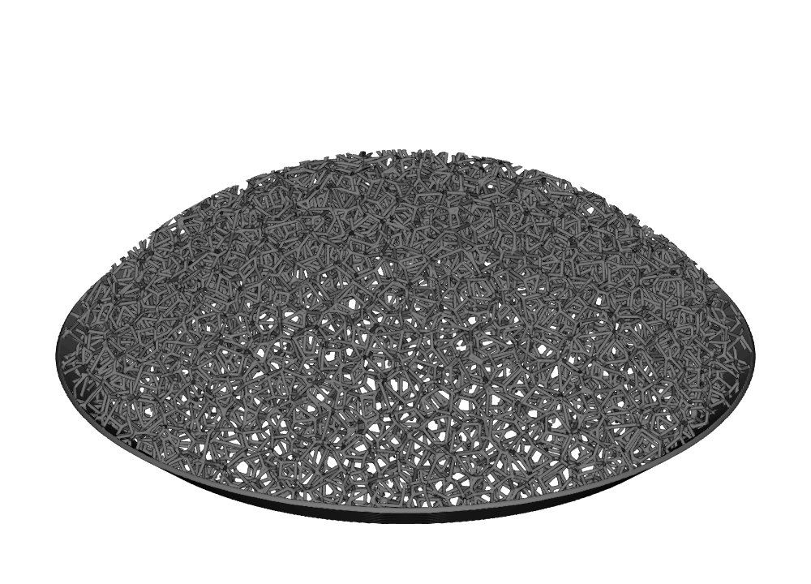

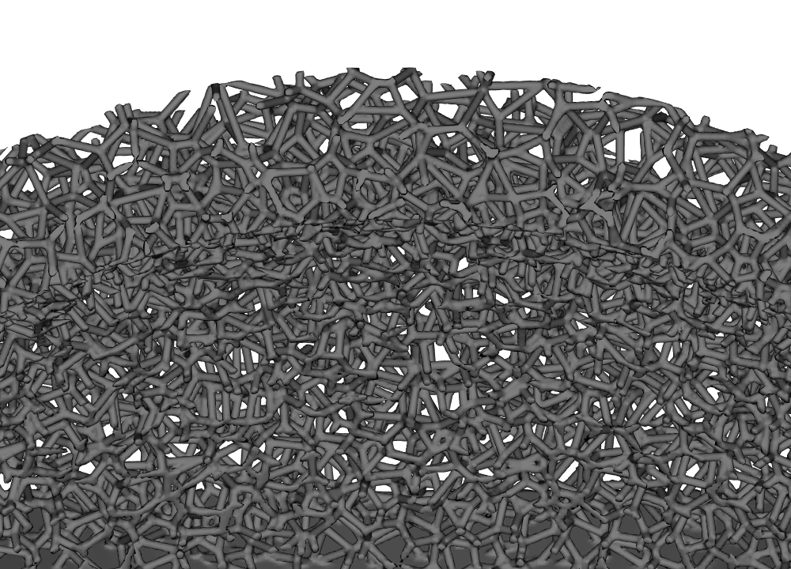
The distance field measures how far each point is from the head, in
millimetres, and is defined everywhere. That matters here because the foam
also asks for the spacing in its seed layer just outside the liner. A spacing
built from the map’s own w coordinate would only exist inside the map.
Inspect prepared topology#
The lattice nodes expose more than an SDF. After preparation you can inspect:
lattice.prepare(pv.Vec3(0.4, 0.4, 0.4), 1.0)
edges = lattice.tessellation_edges()
fragments = lattice.confined_edges()
delaunay_cells = lattice.delaunay_cells()
voronoi_cells = lattice.voronoi_cells()
for cell in voronoi_cells:
print(cell.seed_id, cell.equivalent_diameter)
Graph nodes provide edge and fragment products. Plate nodes provide
tessellation_faces() instead. Both provide Delaunay tetrahedra and bounded
Voronoi cells, including volume and diameter measurements.
Cells marked working_domain_truncated reach the finite construction boundary.
Their size describes the bounded working cell, not an infinite mathematical
cell. This is most common for seeds near the outside of the point cloud.
A practical starting checklist#
Start with a simple host and a constant spacing.
Keep
seedfixed while comparing families or modes.Render the points before judging a density gradient.
Add one graded control at a time: point density, beam thickness, node radius, or wall thickness.
Add
member_blend_radiusgradually and recheck pore size and unintended bridges.Use
boundary="open"unless you need explicit cap or contact products.Prepare and inspect counts before creating a very dense render.
Check closed plate designs for trapped material and inaccessible cavities.
Use
prune_loose=True(or the transition helpers) and finish withmm.check_connectivityso clipping leaves no loose pieces.
Stochastic preparation does more work than tiling a small repeating cell. For interactive exploration, begin with a few dozen points and increase the count only after the family, boundary mode, and grading direction look right.